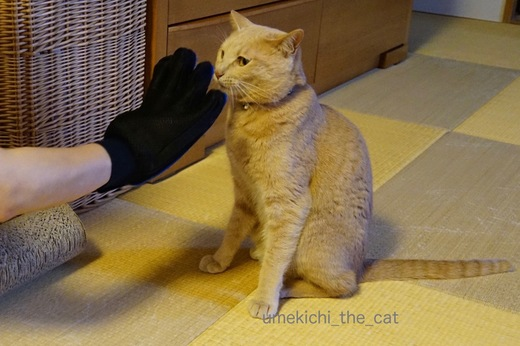
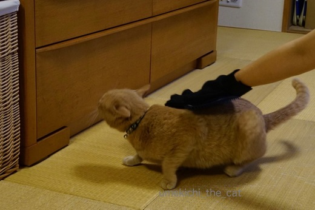
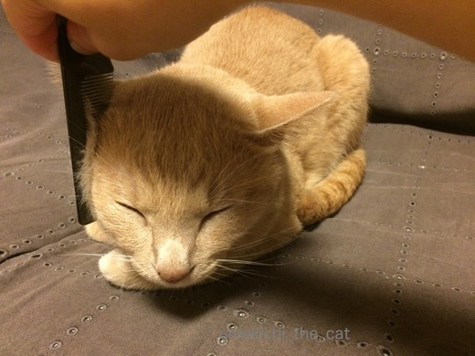
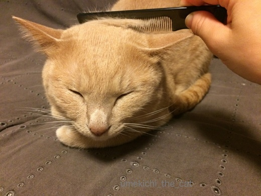
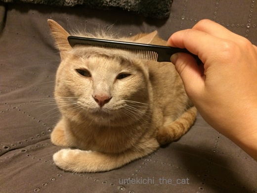
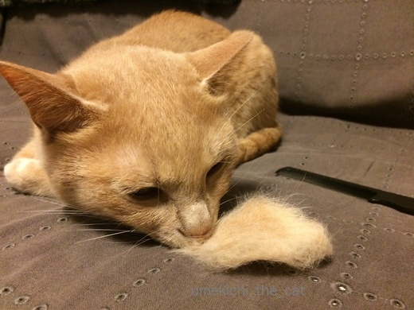
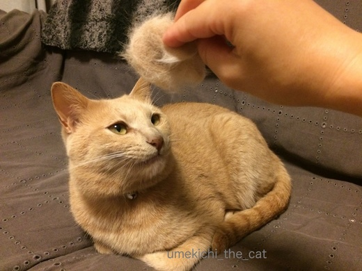
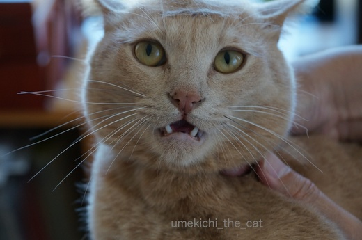
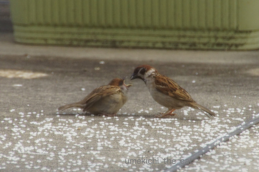
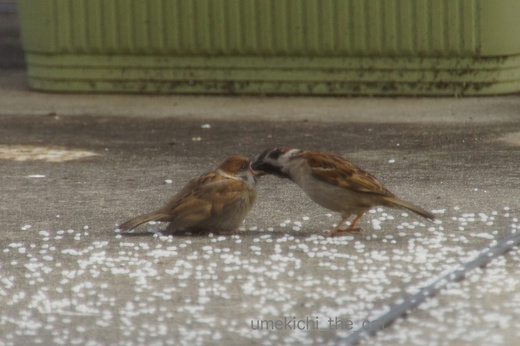

お手頃価格が好き [梅吉]
まだまだ続く梅吉の抜け毛。
シャンプーでは処理しきれなかったので
グローブ型のブラシを買ってみました。

どうですか？梅吉さん。

ファーミネーター程ではありませんがやっぱり嫌がります。
で、ダメもとで100円の櫛を買ってみました。

お膝の上で櫛を入れてみましたがトロトロです！

ほほ毛だって

首回りだって

おでこだって行けちゃいます。
気持ちが良いのかぼよよよ〜んとしたブサ顔ww

たくさん抜けましたね。

カツラにしてみましたよ。
せっかくなので被ってみましょう。
不動産王としては必須アイテムかもしれませんよ〜。

お気に召さなかったのかこんな顔されちゃいました・・・・
カツラほとんど写っていないし。
櫛＜グローブ＜ファーミネーターの順の価格なのですが
梅吉は一番お手頃価格の櫛が気に入った様です。
梅吉、フトコロに優しい子＾＾
今年も子スズメがベランダにお米を食べにやってくる様になりました。
餌をねだる時、食べる時、羽をプルプル震わせるので
我が家では子スズメを「プルプル」と呼んでいます＾＾

ごはんくださぁい

はいよー

カフェオレ色の梅吉

梅吉 2023年8月10日 永眠


梅吉と出会った譲渡会

犬猫の理由なき殺処分ゼロ
妄想広告
UMEKICHI 光

爆発的に早い！
時々攻撃的！
Thanks to Mr.Boss365
爆発的に早い！
時々攻撃的！
Thanks to Mr.Boss365

梅吉さんのとろけ顔かわいー。抜け毛結構取れますね。
雀もかわいー。もう飛んでこられる大きさなのに親が食べさせてやるんですね。
by zombiekong (2017-05-24 00:01)
梅吉さんもすごい抜け毛ですねぇ～
櫛でとろけるお顔！可愛すぎです♪
とても気持ち良さそうですね(#^.^#)
安くて気持ちいい♪
やはり値段じゃないのですね（笑
by きぃ (2017-05-24 07:06)
あるあるですよねー(^^;
うちはフツーのシリコンブラシしか受け入れて頂けません。
何千円も出して買った豚毛の入ったブラシ…どこ行ったんだろう(ｰｰ;)
おもちゃも、100均のピンポン球やら
無料?の毛玉ボールがお気に入りです。
by も〜 (2017-05-24 09:30)
櫛に変わると顔が変身！
ここまで変わるなんて・・・なんだかめんこいぞ♪
by muku (2017-05-24 12:03)
おお！かなり抜けますね。
グローブタイプはうちも嫌いなのです。
私が使ってる細めの櫛なら
「ぼくもぼくもー！」「わたしもー」って寄ってくるので
人間が髪をとかしつつ、猫たちも・・・(笑)
ホントは同じの使うのは宜しくないんだろうけど、、、ま、いっか(笑)
by リュカ (2017-05-24 12:13)
一瞬だけ小顔になってる？
でもすぐに元にもどっちゃいますよねえ＾＾
by じゅらまろ (2017-05-24 12:32)
わはは！うちも茶トラちゃんなので、ヅラのせてみようかなー♪ちなみに我が家はホテルのアメニティのブラシです。この時期、ワッサと収穫できますよー。
梅ちゃん、終わった後はサッパリちゅるんとして、可愛いねー。
by Ginger (2017-05-24 13:13)
おでこに行ってる時、ヤラレっぱなしでも可愛い。
ヅラ（笑）かの国の不動産王も怪しいものです（笑）
梅吉さんは必要ないと怒っていますね。
鳥たちって、空から小さな米粒がよく見えますよね〜
母チュンさん、健気。
by kiki (2017-05-24 17:38)
グローブ型ブラシはとても嫌がってるのに、１００均の櫛だとこんなとろけた
顔をしてくれるなんてw
ヅラ、イケメンな「漢 梅吉さん」には必要ないですよねぇ( ^ω^ )
by ニッキー (2017-05-24 20:24)
この櫛には何か魔法がかかってますか？！^^;
梅吉さん、至福の表情♪
ウチはグローブもダメ、ラバーもダメ、ファミネータもダメ・・・。
ヒト用の櫛に挑戦してみます(*^▽^*)
by ゆきち (2017-05-24 20:50)
梅吉さん、自分のカホリでフレーメン？
トロけそうな表示と言い、クスっとさせて頂きました( ´ ▽ ` )
by ひでぷに (2017-05-24 21:07)
梅吉君の、「ん？何するの？」からの、「抜け毛で自前カツラとか、ないわー」のガッカリ顔がいいですわーฅˆ•ﻌ•ˆฅ♬
スズメさん、可愛いですね♬
羽をプルプルして、飲み込んでるのかな？
ちぃさんちは安心して子育てできる場所なんですね。
by BillK-ko (2017-05-24 21:22)
梅吉さん、気持ちよさそう♪
うちのやつも、いろいろ試したけれど結局
金ブラシで落ち着いてます。
スズメの親子、可愛いですね。^^)
by yes_hama (2017-05-24 21:30)
グローブタイプ、ダメでしたか～。
でも意外、櫛はそんなに気持ちがいいなんて☆
梅吉さん、とろとろで可愛い～＾＾
スズメの親子も可愛いですねえ＾＾
by sana (2017-05-24 23:14)
うち舞に舞ってますよ～毛。でもブラッシングするとあんまり取れないんですよね。家計にやさしい梅吉くん。お利口さん(*^^*)
by palpal (2017-05-25 14:26)
zombiekongさん＞換毛期も終盤ですけれど結構取れました〜。
櫛、侮るなかれ、ですね＾＾
スズメの親子は巣立ってから一週間くらい一緒に過ごしている様に思います。
（我が家はスズメウォッチャーww)
その後巣立った若者たち（顔がシュッととんがったスズメばかり）で
集団を作って生活している様です。
これから秋までの長〜い繁殖期間の始まりです。
きぃさん＞まだまだ続く抜け毛の季節。
猫は一年中抜け毛の季節の様な気もするんですけどね^^;
梅吉が気持ちよくて、毛もちゃんと取れてしかも安い！
ベストなグルーミンググッズが見つかって良かったです(^_－)☆
も〜さん＞一番安いのが好きだなんて
絵に描いたような猫あるあるで自分でも笑っちゃいました。
何千円もする豚毛のブラシ・・・・さ、さすが王子ですね！！
そんなのをポンと買っちゃうも〜さんもすごいヒトだ(＠◇＠)
我が家はヒトも100円ブラシで〜すww
mukuさん＞よほど気持ちよかったのかひどい顔になちゃってますよね〜。
飼い主としてはブサ顔ほどかわいいのですが・・・(〃ω〃)
めんこい・・・？mukuさん東北以北のご出身ですか？
私、札幌出身なんですよー。
リュカさん＞あはは＾＾リュカさん家の櫛は２ニャンさんと共用なんですね〜。
共用ぜんぜん大丈夫！！
私なんて最初は眉コームの櫛部分を供用していたんだから(〃ω〃)
櫛部分があまりに小さいので「効率悪いわ！」と
普通の櫛を買ったら大当たりだったのー。
じゅらまろさん＞そう！一瞬更に小顔！！
でも、梅吉はもともと小顔やで〜(≧艸≦*)
私もこの櫛で顔の周りマッサージしてみようかしら・・・
めざせ！！小顔〜。
Gingerさん＞アメニティのブラシとは盲点でした！！
あの目の粗〜い感じが良いかもしれませんね＾＾
いつも手付かずで残してくるのですが（ティーパックは持ち帰ります＾＾）
今度持って帰って来ますね。
梅吉はどこのホテルのブラシが気に入るかしら〜。
せっせとブラシをしてますますちゅるんと
シルキーな手触りにしてあげなくっちゃ(^o^)
kikiさん＞このブラシを使うとまさにヤラレっぱなし、なすがままでした＾＾
梅吉にはヅラといったのが気に入らなかったのかもしれません！
エクステだよーと言えば若者らしく受け入れてくれたのかも(≧▽≦)
我が家に子スズメを連れてくる母チュン（笑）さん達
彼女たちが幼児期に我が家のベランダでお米を食べて育ったと思われます。
我が家のベランダに行けば食べるに困らない・・・
そんな意識が浸透しているのかも(･◇･)
ニッキーさん＞100均櫛、大好評でびっくりでした〜。
猫様は何がお気に召すか解りませんね・・・奥が深い・・・
あ、梅吉がぷんぷくりんに怒っていたのは「ヅラなんて必要ないでー」
だったのですね！
おかーさん気づかず！！！
by ちぃ (2017-05-25 18:44)
ゆきちさん＞魔法の櫛、あれば良いですね〜。
グルーミングに歯磨き爪切りお耳掃除。
さらにレボリューションまでしてくれると大助かり！！
でもこれらちょっと面倒な事を通じで
愛猫とのコミュニケーションを取っているのも確かなんですけどね(^_－)☆
ひでぷにさん＞雄々しい自分のカホリに陶酔している梅吉でした(ﾉ≧▽≦)ﾉ
トロトロ顔、飼い主ながらブチャイクで笑ちゃいますー(ﾉ≧▽≦)ﾉ
BillK-koさん＞あら( ･̆ˍ･̆ )自毛でカツラって貴重なのにねー。
梅吉そのありがたさが解っていないのね！
懐に優しい子、取り消しぃ〜。
我が家のベランダ人気物件ですよー。
最近は鳩のご夫妻が頻繁にやって来てあわよくば営巣しようとしています。
お食事は提供するけれども巣作りは勘弁して〜( ꒪⌓꒪)
yes_hamaさん＞アズ氏は金ブラシ派なのですね〜。
材質はなんであれ気に入りのブラシがあるのは良い事ですね！！
by ちぃ (2017-05-25 19:38)
sanaさん＞せっかく買ったグローブタイプでしたが見事に玉砕しました^^;
櫛でこんなに抜け毛が取れるとは思っていなかったので嬉しい誤算でしたww
palpalさん＞櫛のブラッシングをしても毛が舞っているのは我が家もです(･◇･)
掃除機おサボりできません^^;
by ちぃ (2017-05-25 21:16)
梅吉さん、すっきりしましたね！
うちはファーミネーターがメインだけど逃げようとするので、ねこのきもちの付録のピンクのブラシも併用してます。短毛だけどよく抜けます。
100均の櫛、私も試してみます(^-^)
by ミミハナ (2017-05-26 08:37)
わ〜！！ミミハナさん来てくれてありがとう(꒦ິ⌑꒦ີ)
ドコノコのメッセージでブログのことお知らせしようか迷ったのですが
言い出しにくくって・・・・
探す手間をおかけしてしまいましたm(__)m
ファーミネータはブラシをしている間中
ず〜っと文句を言う形の口を開けていて
イライライが頂点に達するとブラシをガブっと・・・
口を怪我するんじゃないかと心配になる勢いでした^^;
「ねこのきもち」ブラシの付録もあったのですね。
最近はシャカシャカテントだったのよね。
私、この雑誌が通販制であることを最近知りました( ꒪ω꒪)
猫飼い失格ですよね〜。
100均の櫛もぜひぜひ＾＾梅吉はおっさんくさい黒にしたけど
キラキラピンクとかわいいのもありましたよ〜。
文字数を気にすることなくメッセージのやりとりができて嬉しかったです！！
また覗きに来てくださいね〜(๑˃̵ᴗ˂̵)و
by ちぃ (2017-05-26 09:55)
こちらこそ、また梅吉さん見られて嬉しいです。iPhoneのブックマークを整理していて梅吉さんのブログがあったことを見つけました(^-^)
楽しみが増えました～！またよろしくです。
ハート、たくさんありがとうございました！
by ミミハナ (2017-05-26 15:06)